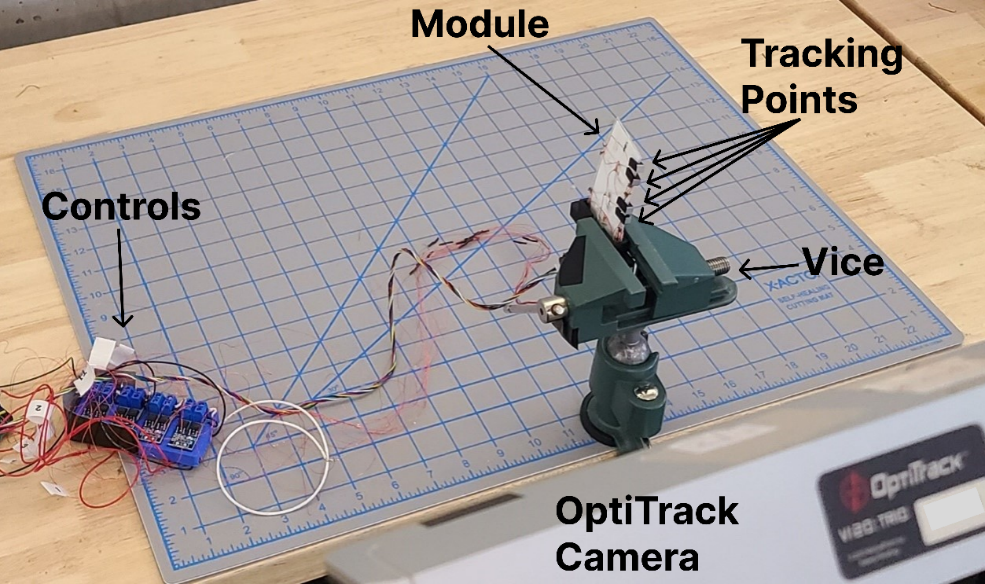

What this page covers
Control code used for hardware testing and robot demonstrations.
The controller evidence shows how I move from mechanism concepts into repeatable hardware behavior: Feetech servo control, Bluetooth gait commands, thermal variable-stiffness joint control, and amphibious robot mode control.
- Hand controller: PC-to-servo communication, current limits, live feedback, ID assignment, and scripted motion sequences.
- Origami controllers: encoder motors, Bluetooth commands, heater loops, thermistor feedback, relay isolation, and gait routines.
- Amphibious controller: BLE mode selection for walking, swimming, morphing, reheating, reset, and push-off behaviors.
OriHand Python
Direct PC control of Feetech HLS servos through a URT-2 serial bus, with GUI, CLI, live feedback, current limits, and sequence planning.
ESP32 origami C++
Bluetooth gait commands, encoder-based cable targets, three motor channels, and two PID heater loops for the modular stiffness-insert robot.
Arduino Mega VSJ C++
Eight heater channels, relay isolation, six thermistors, PID temperature control, two encoder motors, and gait command logic for the composite VSJ robot.
Arduino MKR amphibious C++
BLE command interface for the Nature Communications robot, coordinating four encoded leg motors, heating, TCA actuation, morphing, swimming, walking, and push-off behaviors.
Controller map
Each controller connects to a different piece of hardware.
Each entry summarizes what the code reads, what it commands, and what physical behavior it makes repeatable.
| Controller | Hardware connection | Signals handled | Hardware behavior |
|---|---|---|---|
| OriHand Python controller | PC to Feetech URT-2 serial bus to HLS servos. | Servo ID, target angle, speed, acceleration, current limit, live position, load, voltage, temperature, current raw. | Hardware-facing hand control with safe current-limited motion and repeatable scripted sequences. |
| ESP32 modular origami firmware | Bluetooth command source to cable motors, encoders, and two VSI heaters. | Gait command, three cable targets, encoder positions, two temperature setpoints, PID heater PWM. | Wireless origami control is organized around gait modes and bounded actuator targets. |
| Arduino Mega VSJ firmware | Serial command source to thermal VSJs, relay isolation, and two cable motors. | Joint temperature setpoints, thermistor reads, PID duty cycles, relay states, gait state, encoder counts. | Embedded code coordinates material state and mechanism motion instead of treating heating as a side task. |
| Arduino MKR amphibious firmware | BLE characteristic writes to four leg motors, heaters, and TCA outputs. | BLE command value, encoder counts, motor PWM, phase pins, heating interval, morph/swim/walk routines. | System-level firmware turns a lab prototype into an untethered mode-switching robot. |
Hand controller
OriHand Python: direct Feetech URT-2 hardware control.
The Python file is a standalone Feetech HLS controller for PC-side testing. It builds packets for the servo bus, discovers IDs, reads feedback, converts raw units into engineering units, limits current, and provides both a GUI and command-line interface.

- Bus layer: Feetech packet construction, checksum, little-endian register writes, signed value decoding, and status-packet parsing.
- Hardware safety: target clamp, speed and acceleration conversion, soft-home settings, torque enable/disable, and current-limit conversion from amps to raw command units.
- Reviewable tooling: serial-port scan, servo ID reassignment, live feedback display, discovered-servo commands, individual servo panels, CLI commands, and saved motion sequences.
- Hardware role: supports real hand bring-up through servo discovery, feedback inspection, current limits, and repeatable motion scripts.
Modular origami controller
ESP32 Bluetooth C++: gait modes plus active VSI heating.
The ESP32 firmware combines three encoder-controlled cable motors with two thermistor/PID heater channels. Bluetooth commands can start named gait demos or send raw target arrays for cable position and temperature setpoints.
Wireless interface
Bluetooth device name Oribot2; commands include SHIMMY, CRUTCH, CRAWL, STOP, and space-separated numeric target arrays.
Motor layer
Three cable motors use ESP32 LEDC PWM channels, encoder interrupts, millimeter-to-count conversion, directional phase signals, and deadbanded target seeking.
Thermal layer
Two thermistors are converted through a beta model, then PID outputs drive MOSFET PWM channels with zero-setpoint heater shutdown.
Composite VSJ controller
Arduino Mega C++: thermal state plus locomotion state.
The Philosophical Transactions code coordinates two VSJ modules. It accepts serial commands for inch, undulate, turtle, reset, and manual motor setting; maps those commands into joint temperature setpoints; isolates unused heaters with relays; and runs the motor sequence only after the thermal state is ready.

- Thermal control: six thermistor inputs are averaged and converted to temperature for eight PID heater outputs.
- Electrical protection: eight relay channels disconnect inactive heaters; the code explicitly blocks simultaneous activation of opposing diagonal heaters on the same module.
- Locomotion logic: encoder-based stages drive two cable motors through inchworm, undulation, and turtle-style gait cycles.
- Hardware role: coordinates material stiffness, circuit state, and mechanism motion in one controller.
Amphibious robot controller
Arduino MKR BLE C++: untethered mode control for the Nature Communications robot.
The amphibious firmware exposes a BLE command service for the SMART prototype and maps characteristic values to physical robot modes: terrestrial movement, swimming gait, morphing, reheating, encoder reset, leg heating for swimming, and push-off.

- Wireless interface: ArduinoBLE service and writable byte characteristic allow phone-based mode selection through LightBlue-style tools.
- Motor coordination: four encoded leg motors are driven through phase pins and PWM, with position loops that stop individual motors when targets are reached.
- Morphing sequence: routines coordinate heating, TCA power, leg motor motion, and reset behavior for land/water transition tasks.
- Hardware role: sequences a whole robot under untethered outdoor constraints, not just bench actuation.